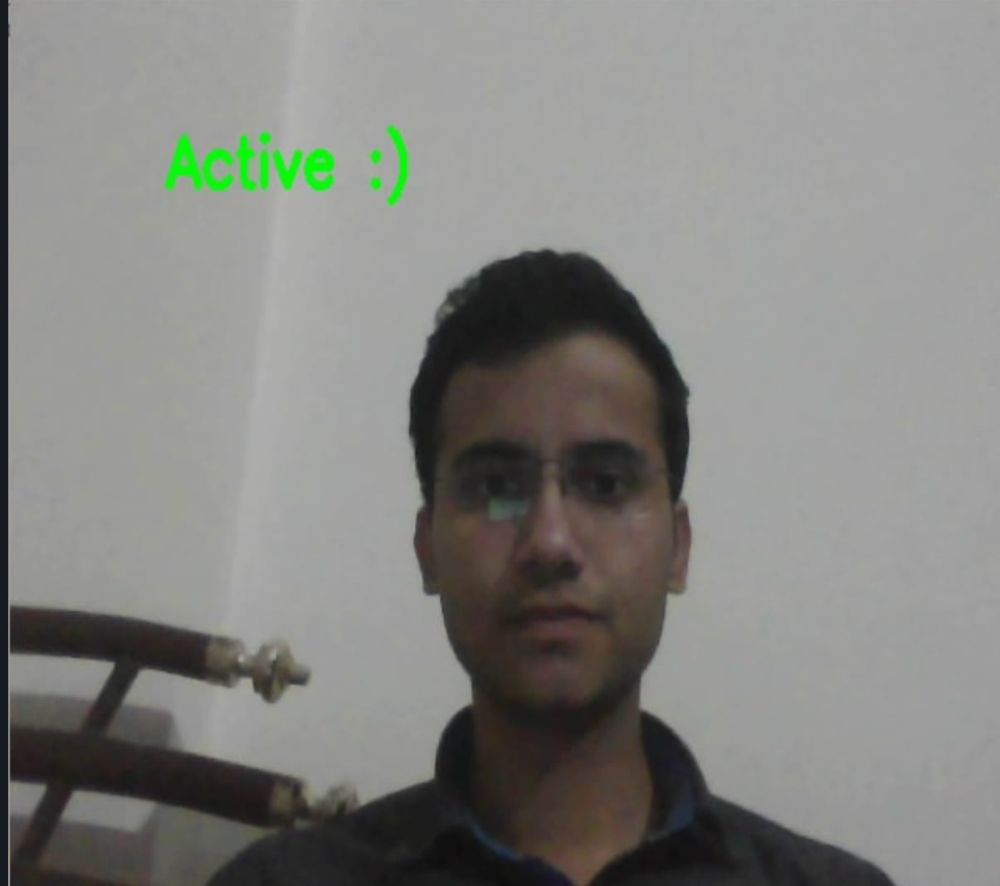

Creating an effective online learning environment involves not only delivering
content but
also ensuring active student engagement. To enhance this interaction, incorporating head movement
tracking
into the web camera becomes a valuable tool. By leveraging computer vision technologies, we can detect
and
monitor students' presence during online classes in real-time. This feature not only helps educators
ensure
that students are actively participating but also provides insights into their level of engagement.
content covered in previous classes. This serves as a reinforcement mechanism, promoting the retention
of
information and encouraging students to stay mentally active during the entire session.

In essence, the integration of head movement tracking and the incorporation of spontaneous MCQs
contribute
to the creation of a dynamic and engaging virtual classroom. These features not only serve the practical
purpose of ensuring student presence but also enhance the overall educational experience by promoting
active
participation and reinforcing learning outcomes. As technology continues to evolve, such innovative
approaches play a pivotal role in shaping the future of online education, making it more interactive,
personalized.